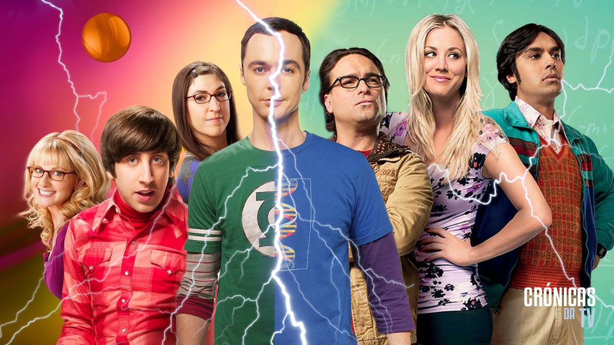
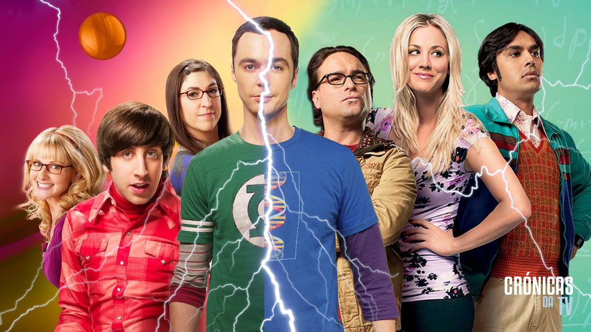

Once Upon a Time

Descrição
A história de um mundo novo, onde contos de fadas e vida moderna colidem. Emma Swan está feliz com sua vida; seu filho Henry, que ela deixou há mais de dez anos, reaparece e acha que ela é a filha de Branca de Neve e do Príncipe Encantado.
Once Upon a Time (Era Uma Vez (título no Brasil/Portugal)) é uma série de televisão americana de drama e fantasia criada por Adam Horowitz e Edward Kitsis. Estreou em 23 de outubro de 2011 e terminou em 18 de maio de 2018, na emissora ABC.
GALERIA


 
